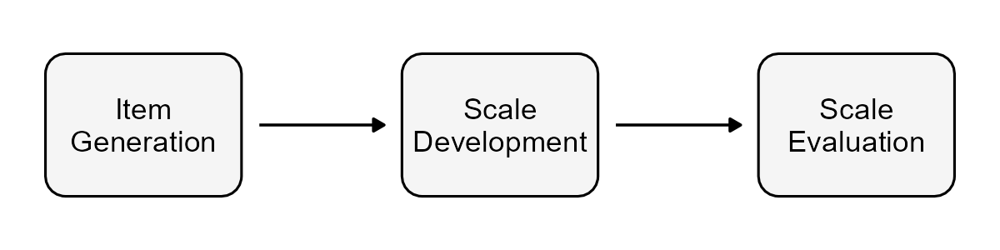

Measuring DHE
Overview
The Digital Health Enablement Scale (DHES) is a self-report psychometric instrument designed to measure an individual’s capacity to engage with and benefit from digital health interventions. It operationalises the seven domains of the DHE model, capturing the cognitive, motivational, social, and behavioural factors that underpin meaningful digital health engagement.

The scale is designed for use with adult populations in research and clinical contexts, with particular relevance to settings where digital health inequalities are a concern — including primary care, public health, and weight-related behaviour change programmes.
Development
The DHES was developed through a rigorous mixed-methods process grounded in established frameworks for scale development. Development involved:
| Date | Description | Status | Ethics Reference |
|---|---|---|---|
| Mar 2023 | A Scoping review of mechanisms explaining socioeconomic disparities in digital health outcomes | 🟢 Complete | N/A |
| Jun 2023 | A Literature review of existing digital health scales to identify gaps and inform item development | 🟢 Complete | 1447 |
| Aug 2023 | Proto-model development from existing theory | 🟢 Complete | 1447 |
| Nov 2024 | Semi-structured interviews with users on digital health experiences | 🟢 Complete | 1447 |
| Nov 2024 | Delphi study with subject matter experts to establish content validity | 🟢 Complete | 1447 |
| Feb 2025 | Cognitive interviews with users on the draft scale | 🟢 Complete | 6276 |
| Jun 2025 | Pilot study of the draft DHES | 🟢 Complete | 6276 |
| May 2026 | > Full scale testing with UK adult sample < | 🔵 Underway | 6276 |
| TBC 2026 | Psychometric evaluation of structural validity and measurement properties | 🟡 Planned | — |
| TBC 2027 | Validation study examining convergent, divergent, and criterion validity | 🟡 Planned | — |
Current Status
The DHES is currently undergoing peer review. A full validation study examining the scale’s structural validity, reliability, and convergent validity in a UK adult sample is ongoing.
The scale is not yet publicly available. Researchers interested in the DHES — including those wishing to collaborate or discuss potential applications — are warmly encouraged to get in touch.
Availability
Full details of the scale, including items, scoring instructions, and psychometric properties, will be made available on this page following publication.